CURATED COLLECTION
主機板
MB, MotherBoard 或 MainBoard
一、從外觀認識主機板
主機板（Motherboard），又稱為「母板」，是電腦內部最重要的硬體之一，也是連接所有電腦零件的核心平台。主機板負責連接中央處理器（CPU）、記憶體（RAM）、顯示卡、硬碟等設備，讓各個零件能夠互相傳輸資料並協同運作。
主機板的主要功能
- 連接硬體設備： 讓 CPU、記憶體、顯示卡及儲存裝置能夠連接在一起。
- 傳輸資料： 提供各個硬體之間的資料傳輸通道。
- 分配電力： 將電源供應器提供的電力輸送至相關零件。
- 提供擴充功能： 可以安裝額外的顯示卡、網路卡、音效卡等設備。
- 管理系統啟動： 透過 BIOS／UEFI 韌體進行硬體初始化及開機設定。
二、Intel常見插槽與硬體匹配
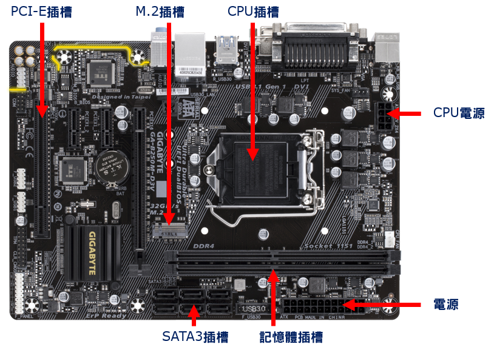
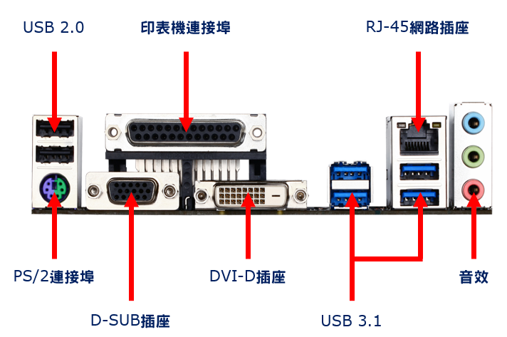
三、AMD常見插槽與硬體匹配
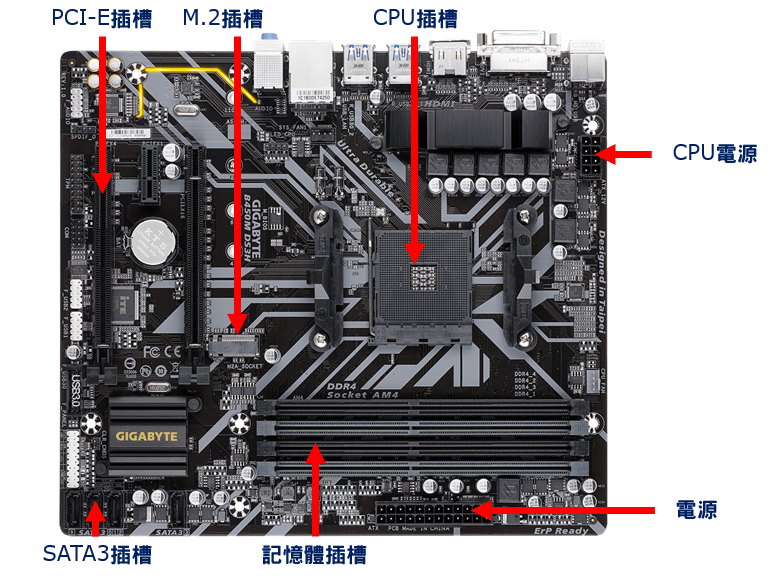
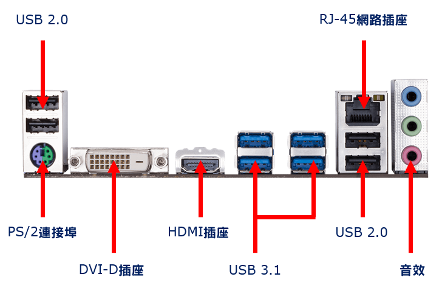
四、CPU 插槽
- 要先選擇 CPU 的種類才能決定主機板。
- 目前分為 Intel 與 AMD 系列
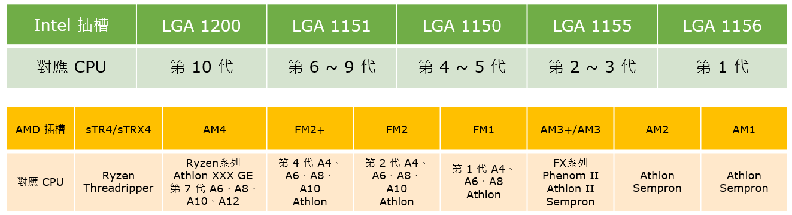
Intel 插槽
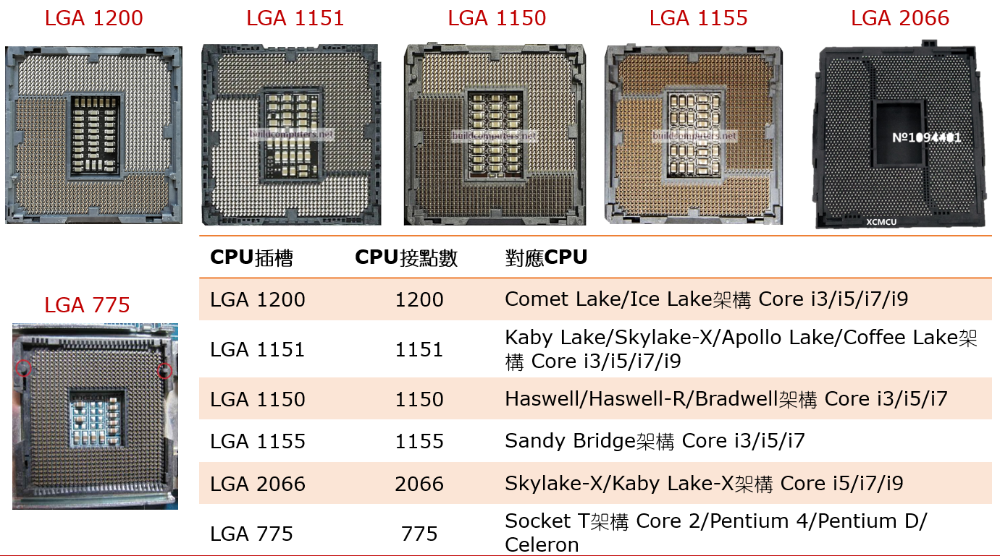
AMD 插槽
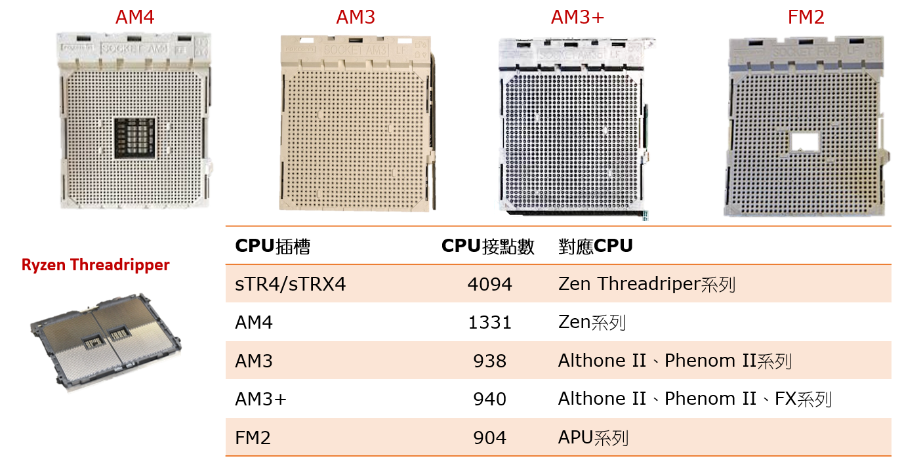
五、記憶體插槽
- 雙通道系統-選購品牌、型號、容量相同,並且放入到正確的插槽中,可讓記憶體產生並聯效果,以達到多一倍的存取效率。
- 目前市場主流為 DDR4/DDR3。
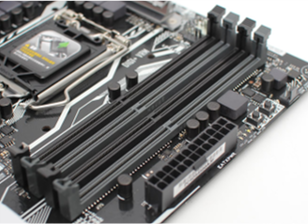
六、顯示卡插槽
- 目前顯示卡已全面使用PCI-E 3.0的介面標準。
- PCI-E有多種型態以及規格，大型的x16插槽可以對應全部的PCI-E介面卡，小型的x1、x2、x4則要看主機板是否支援
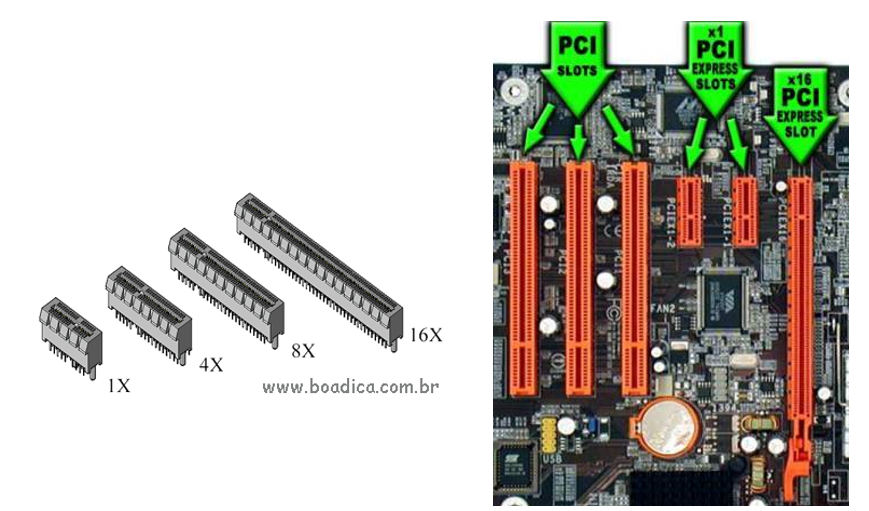
七、PCI 插槽
- PCI (週邊元件連接介面) 曾是主機板上最搶眼的匯流排, 但在 PCI-E 成為主流規格後, 主機板廠商多隻保留約 1 〜 3 條插槽, 以提供目前仍為數不少的 PCI 介面卡使用。
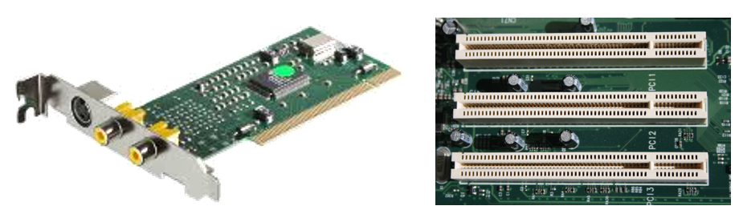
八、SATA3 插槽 / SATA Express 插槽
- SATA3為硬碟及光碟機介面,傳輸速度為600MB/s。
- SATA Express為固態硬碟的高速連接埠,傳輸速度可以達到1600MB/s。
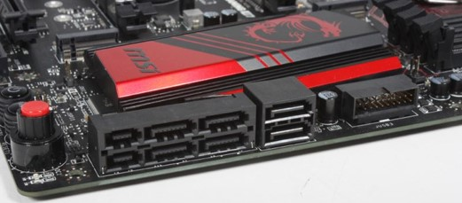
九、SATA RAID 磁碟陣列
- RAID (獨立磁碟備援陣列) 俗稱『磁碟陣列』, 意思是利用多部硬碟組合並架構成單一的大型磁碟機。一個建立好的 RAID, 在使用上仍像是 1 部硬碟般沒啥兩樣；但除了基本的存取機制外, RAID 磁碟還可提供更大的容量、更高的讀寫效能, 以及額外的『安全性』 － 如資料容錯與修復等能力。
- 目前許多主機板上都會內建 SATA RAID 功能 － 常見的組合有 RAID 0、RAID 1、RAID 10 (0 ＋ 1)、與 RAID 5 等架構, 彼此的差異如下表：
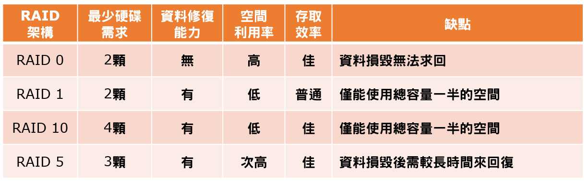
十、M.2插槽
- 固態硬碟高速連接埠，傳輸速度3200 MB/s，主要是替代Mini PCI-Express/mSATA和SATA。
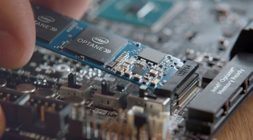
十一、I/O介面
PS/2
- 電腦鍵盤與滑鼠專用介面
- 滑鼠PS/2介面一般為綠色
- 鍵盤PS/2介面一般為紫色
- 目前滑鼠鍵盤大都為USB介面,所以主機板上組態為通用的PS/2 COMBO介面
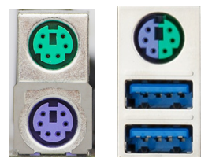
D-sub
- D-sub又名VGA,是類比訊號傳輸介面
- 電腦圖像資料必須先轉成類比訊號才可傳輸,傳送到顯示器上再轉成數位訊號輸出,拉長顯示傳輸時間
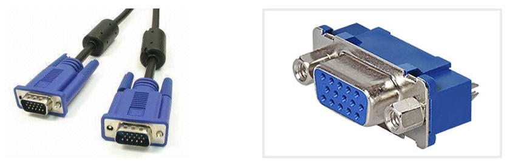
DVI
- DVI是高速數位訊號傳輸技術,包含DVI-A、DVI-D和DVI-I三種連接埠。
- DVI-A已被淘汰,目前市面上大都為DVI-D連接埠,而DVI-I是在DVI-D的基礎上增加了5個針腳,以相容類比訊號
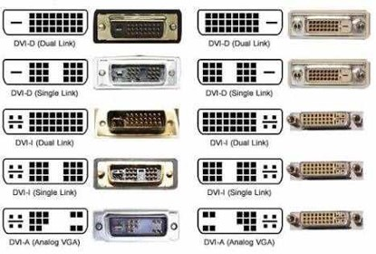
HDMI
- HDMI是高畫質影像傳輸介面,可用於機上盒、DVD播放機、個人電腦、電視遊樂器、綜合擴大機、數位音響及電視機。
- HDMI可以同時傳送音訊和視訊訊號
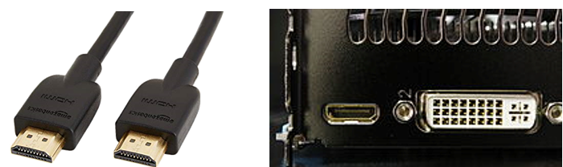
USB
- 通用序列匯流排,是目前最流行的介面,特點是方便的熱插拔特性。
- 目前可以看到USB 2.0(480 MB/s)、USB 3.0(5 GB/s)及USB 3.1(10 GB/s)三種
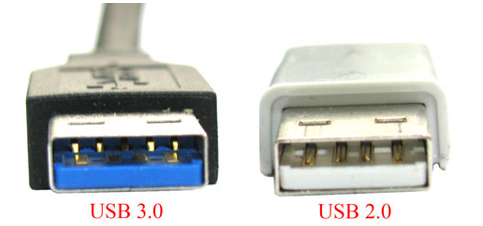
eSATA
- 針對外接SATA裝置而制定的規格,大多使用於儲存裝置,如硬碟外接盒或磁碟陣列盒等。
- 提供USB 2.0傳輸速度也支援熱插拔
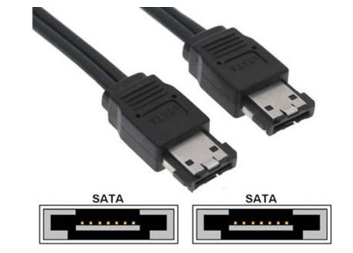
RJ-45
- 雙絞線俗稱網路線,使用的連接埠就是RJ-45,用於提供網路連結
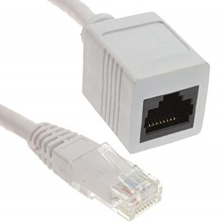
DisplayPort
- 各家影音家電廠商為了不想額外多負擔HDMI的授權費用,另外製定了DisplayPort的新規格
- 支援目前市面上所看到的影音設備
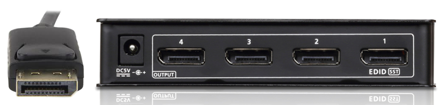
IEEE1394
- IEEE1394連接埠是一個串列連接埠,主要應用於數位相機、DV等設備
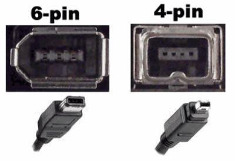
十二、主機板板型
ATX
- ATX就是所謂的大板，尺寸約為305mm x 244mm，面積較大相對功能也比其它板子來的豐富，散熱也更好一些。
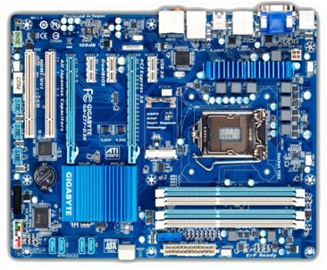
EATX
- 是Extended ATX的縮寫，主要用於高性能PC主機、入門式工作站等。
- 它通常用於雙處理器和標準 ATX 主機板上無法勝任的服務器上，尺寸為305mm × 265 mm
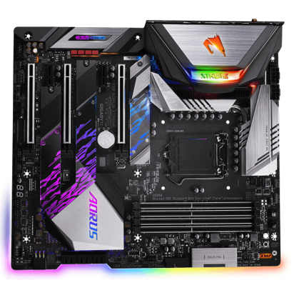
MATX
- MATX即Micro ATX是正方形的，尺寸約為244mm x 244mm，通常記憶體插槽會有4個。
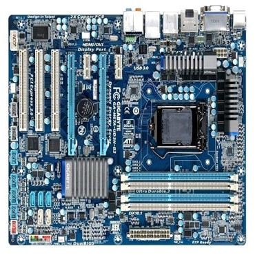
MINI-ITX
- MINI-ITX或者叫ITX板型就更小了，尺寸約為170mm x 170mm，通常搭配專用ITX機殼。
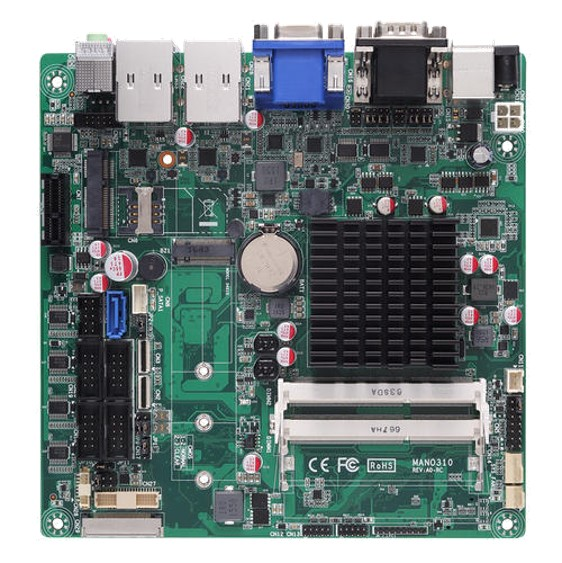
十三、晶片組的功能與地位
晶片組 (Chipset) 意指各個控制晶片 (Chip) 的集合體 (Set), 更可說是主機板上最重要、最關鍵的元件；目前晶片組多分為 2 類：北橋晶片 (North Bridge) 與南橋晶片 (South Bridge)：
北橋晶片
- 北橋是主機板上最重要的晶片，負責連接CPU、記憶體和顯示卡
- 通常中階以上的主機板都會在北橋上裝散熱片或風扇，因為它就像CPU一樣會發熱
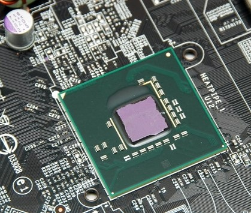
南橋晶片
- 南橋和北橋互連並連接其他週邊，我們熟知的主機板「功能」大多來自南橋，比如USB、網路、音效、SATA/IDE硬碟，都是從南橋連出來的。
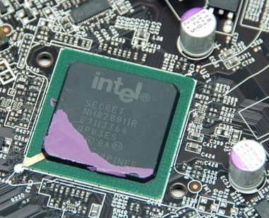
南橋晶片與北橋晶片關係圖
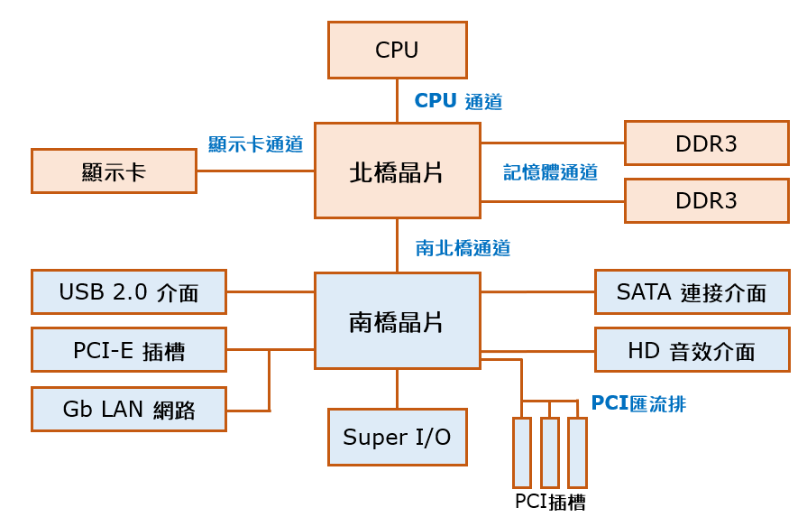
十四、BIOS
- 基本輸入輸出控制系統,主要用來管理硬體的各種設定值
- BIOS存在主機板的PROM上,想進入主機板的BIOS可在按下電源後按下對應按鍵即可進入
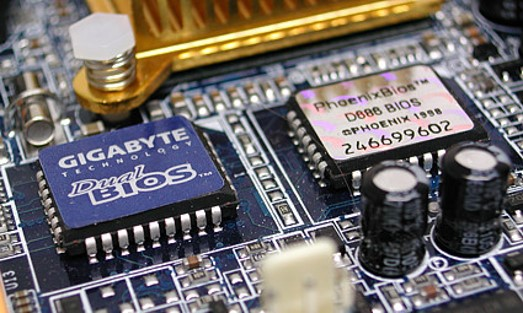
十五、CMOS
- 互補式金屬氧化物半導體，是一種積體電路的設計製程，可用來製作電腦電器的靜態隨機存取記憶體、微控製器、微處理器與其他數位邏輯電路系統、光學儀器
- 電腦系統的BIOS程式和參數資訊都保存在ROM和SRAM中，而「CMOS設置」就是指在設定BIOS的內容。
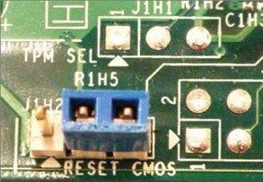
十六、電池
- 以鋰材質製作而成，用來維持電腦系統的時間和BIOS選項設定
- 沒電系統時間會一直跑掉，而開機也會很麻煩，因為BIOS設定是協助硬體設備和軟體系統相容，也需要重新設定。
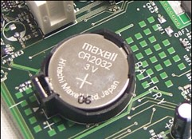
十七、主機板電源插座
- 電源插座用來讓電源供應器 能夠提供足夠、穩定的『動力』給主機板上所有元組件。目前主機板上的電源插座為 24-Pin 的主電源插座 (Main Power Connector)：
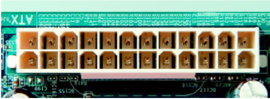
十八、CPU 供電插座
- 此外鑑於 CPU 的耗電量日趨上升, 因此目前主機板上也設計有獨立、專門提供 CPU 電力的 +12V 電源插座：
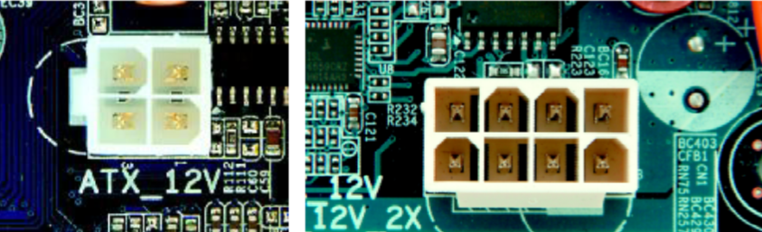
十九、風扇插座
- 主機在運作時會產生高溫，所以必須使用各種風扇來達到降溫的作用，例 CPU 風扇、晶片組風扇、顯示卡風扇 甚至機殼上面可能也有好幾個大型的系統風扇；必須透過主機板及電源供應器來供電
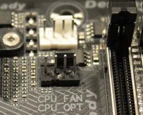
二十、前方面板線路插座
- 開關機時按 Power 鈕
- 重新開機時按 Reset 鈕
- 要知道電腦有沒有動作時，可以看訊號燈有沒有亮起或閃爍
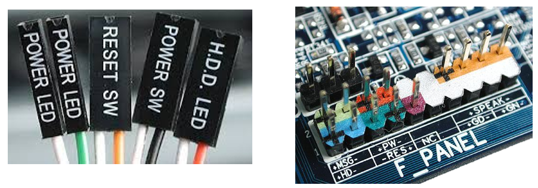
二一、電容
- 提供 CPU 穩定的電力, 傳統電容使用的導電材質多為電解液, 容易因溫度或長時間不使用而產生質變, 造成外殼膨脹或電解液外漏的現象 (一般稱為『爆漿』), 因此越來越多廠商使用內含固態導電材質的電容 (即俗稱的『固態電容』)
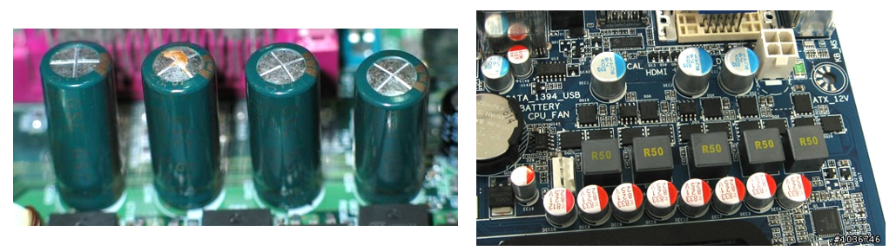
二二、電感
- 可濾波、及穩定電流, 以提高送至 CPU 的電流穩定性, 保障 CPU 不會因電流不穩而燒壞。目前各家產品使用的電感多為 Iron Powder (純鐵粉) 或 Ferrite (亞鐵鹽) 材質, 其中以 Ferrite 材質較佳。
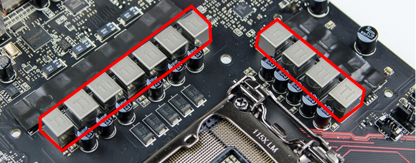
二三、電晶體
- 功能是控制電流進出、類似電源開關, 不過當電流通過電晶體時會因電阻而造成電能耗損, 因此目前也有不少廠商強調使用較低電阻的電晶體, 以減少電能耗損、達到省電的目的。
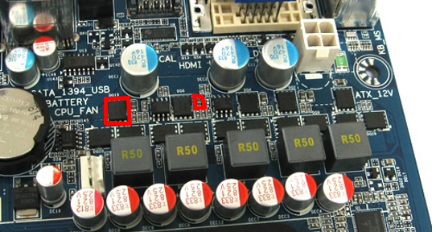
包裝內容物
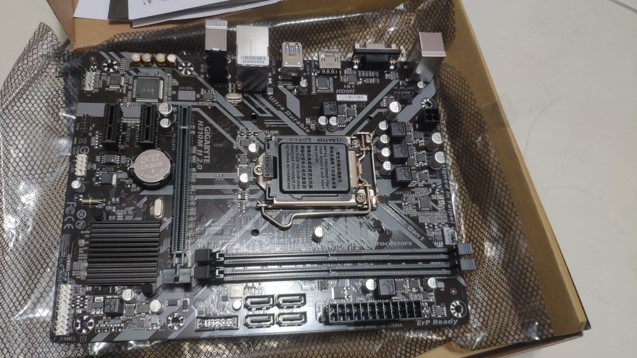
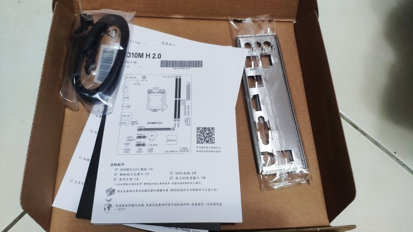
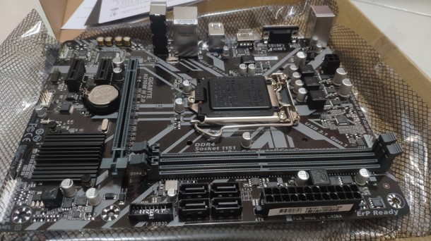
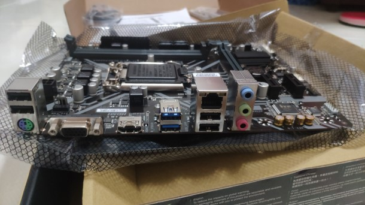